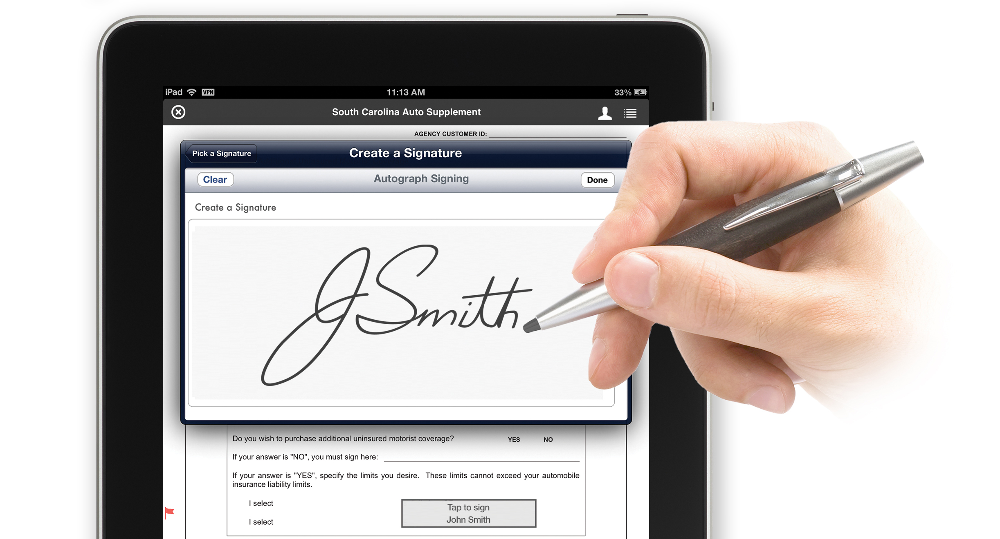

Elektronický podpis je akýkoľvek elektronický proces, ktorý označuje schválenie alebo prijatie dokumentu alebo transakcie. Elektronické podpisy predstavujú digitálnu náhradu za vlastnoručné podpisy, čo umožňuje podpisovanie zmlúv elektronicky namiesto tradičnej papierovej metódy. Stali sa dôležitou technológiou umožňujúcou kľúčové obchodné procesy na diaľku zachovať bezpečne a právne platné.

Digitálny podpis je pokročilá forma elektronického podpisu, ktorá využíva kryptografiu na zabezpečenie autenticity a integrity (nezmenenosti) dokumentu. Ide o právne uznateľný spôsob potvrdzovania dokumentov, ktorý je špecifický tým, že pripojený certifikát zaručuje, že dokument nebol po podpísaní upravený.
| ELEKTRONICKÝ PODPIS | DIGITÁLNY PODPIS |
|---|---|
| Akýkoľvek elektronický spôsob schválenia dokumentu | Pokročilá forma elektronického podpisu |
| Používa sa pri bežných zmluvách a dokumentoch | Používa sa pri dokumentoch s vysokou úrovňou bezpečnosti |
| Nemusí využívať pokročilé šifrovanie | Využíva kryptografiu, certifikáty a vyššiu ochranu |
| podpísanie balíka kuriérovi na tablete, kliknutie na „Súhlasím“ pri online zmluve | podpisovanie pracovných alebo právnych zmlúv, bankové dokumenty |
Pri papierových dokumentoch je možné sfalšovať podpis niekoho iného, upraviť podpísaný dokument dopísaním alebo dotlačením ďalšieho textu, či vymeniť alebo doplniť celé strany do podpísaného dokumentu.
Pri elektronickom podpise občianskym preukazom nič z toho nie je možné. Podpisovať v mene niekoho iného sa nedá bez jeho preukazu a jeho bezpečnostných kódov a po úprave podpísaného dokumentu by bol podpis hneď neplatný. Samotné podpisovanie dokumentu sa deje priamo na čipe občianskeho preukazu a nie je žiadnym spôsobom možné váš privátny kľúč odtiaľ ukradnúť a používať bez vášho vedomia.
Asymetrické šifrovanie je spôsob šifrovania, pri ktorom sa používajú dva rôzne kľúče:
Elektronický podpis a firewall spolu súvisia, pretože oba pomáhajú zabezpečiť bezpečnú elektronickú komunikáciu. Každý z nich však chráni inú časť bezpečnosti.
Firewall je ochranná brána medzi počítačom a internetom. Sleduje prichádzajúce a odchádzajúce dáta a podľa bezpečnostných pravidiel rozhoduje, ktoré pripojenia povolí a ktoré zablokuje. Pomáha tak chrániť zariadenie pred útokmi, vírusmi alebo neoprávneným prístupom.
Pri používaní elektronického podpisu firewall zabezpečuje, aby sa dokumenty a citlivé údaje prenášali bezpečne a aby sa útočníci nedostali k podpisovým kľúčom alebo osobným údajom. Spolu tak vytvárajú bezpečnejšie prostredie pre online komunikáciu a prácu s elektronickými dokumentmi.
Firewall pomáha chrániť zariadenie, v ktorom je súkromný kľúč uložený, napríklad počítač, mobil alebo čipovú kartu. Kontroluje internetovú komunikáciu a blokuje podozrivé pripojenia alebo škodlivý softvér, ktorý by sa mohol pokúsiť získať prístup k podpisovým kľúčom.
Autorské právo môžeme definovať ako súbor právnych pravidiel, ktoré chránia vytvorené dielo a určujú práva autora k jeho používaniu a šíreniu.
Počítačový program z hľadiska práva sa chápe ako umelecké autorské dielo (rovnako ako kniha, hudobné dielo, obrazy...) a je chránený autorským právom. Autor softvéru má právo rozhodovať o tom, ako sa jeho program bude používať a šíriť. Podmienky používania programu určuje licencia. Ak používateľ dodržiava licenčné podmienky, používa legálny softvér. Ak chceme program používať na viacerých počítačoch, napríklad vo firme alebo škole, je potrebné zakúpiť multilicenciu, ktorá určuje počet zariadení alebo miesto používania programu.
Autorské právo vychádza najmä z Autorského zákona, ale aj z ďalších medzinárodných zmlúv. Autorské právo trvá v štátoch EÚ najmenej 70 rokov po autorovej smrti. Polícia na Slovensku zatiaľ kontroluje legálny softvér hlavne vo veľkých firmách.